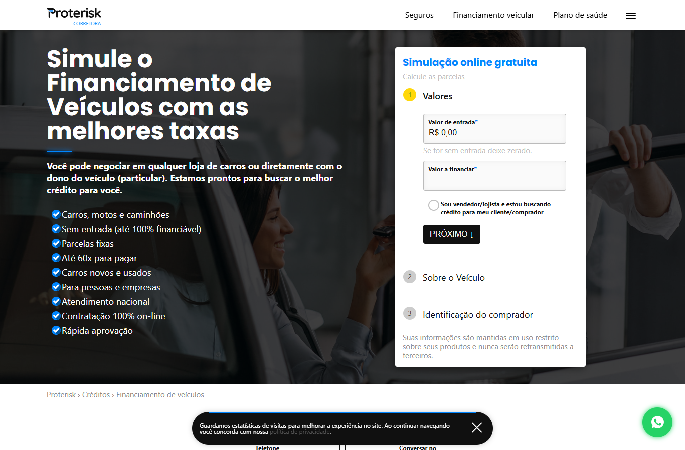
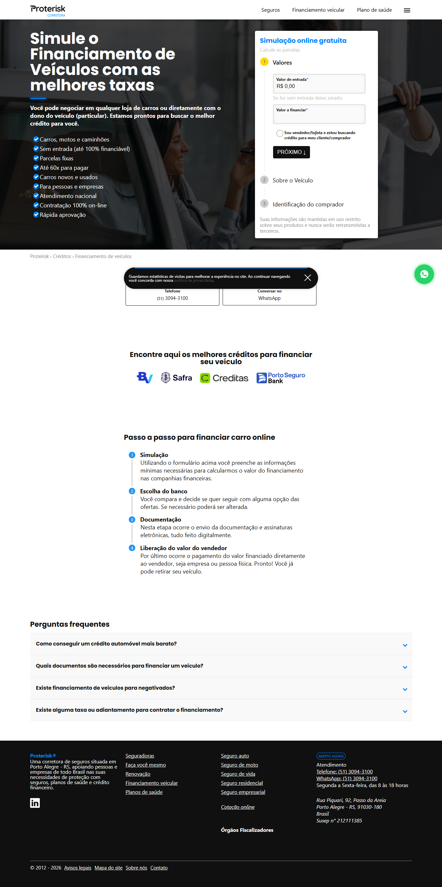

Sistema de Investigação de Marca e Identidade Online
https://www.proterisk.com.br/creditos/simulador-de-financiamento-de-veiculos
Prioridade: HIGH · Cenário: C_POSSIBLE_OFFICIAL_CHANNEL · Revisão humana: PENDING
Trata-se de página comercial de captação de financiamento de veículos da 'Proterisk Corretora' (dentro do escopo de potenciais correspondentes bancários/intermediadores de crédito). Embora não haja personificação do Banco BV e a corretora utilize marca própria em contexto multibancos, a página utiliza o logotipo oficial do Banco BV ('bv.svg') e disponibiliza simulador próprio de crédito omitindo o CNPJ do estabelecimento, a declaração expressa da condição de correspondente bancário e os canais de ouvidoria das instituições contratantes, ensejando revisão à luz do art. 14, II e III da Resolução CMN nº 4.935/2021. [Revisor: CONFIRM] A página pertence à 'Proterisk Corretora', um intermediador comercial de crédito/financiamento de veículos (COBAN). Conforme evidenciado em E-IMG-1 e E-SHOT-FULL, o site exibe o logotipo oficial do Banco BV e disponibiliza um simulador próprio para captação de propostas de financiamento e atendimento via WhatsApp (E-HDR, E-CONTACT-2), mas omite em toda a página sua razão social, CNPJ, declaração expressa da condição de correspondente bancário e dados de ouvidoria (E-FTR), caracterizando indício de descumprimento do art. 14, II e III da Resolução CMN nº 4.935/2021. Confirma-se a classificação REVIEW_REQUIRED.


| Ref | Tipo | Local | Conteúdo |
|---|---|---|---|
| E-URL | domain | url | URL final: https://www.proterisk.com.br/creditos/simulador-de-financiamento-de-veiculos (domínio: www.proterisk.com.br) |
| E-DISC-001 | text | search_index | Índice de busca (grounding): proterisk.com.br — **Nome do Estabelecimento/Perfil:** Proterisk Corretora | **URL:** `https://proterisk.com.br/` *(Landing Page: Créditos > Financiamento de veículos)* | **Uso da Marca e Canal (WhatsApp/Simulação):** Oferece um **simulador próprio completo** na página (captando valor de entrada, placa, modelo do veículo, CPF/CNPJ, data de nascimento e telefone do comprador/lojista) associado a um botão de atendimento *"Conversar no WhatsApp"* | Destaca a marca **BV Financeira** na seção *"Encontre aqui os melhores créditos para financiar seu veículo"* | Identifica-se comercialmente como "Proterisk Corretora", mas no corpo principal do formulário de simulação não exibe em destaque a declaração expressa de correspondente bancário vinculada ao CNPJ e razão social antes da coleta de dados sensíveis de crédito |
| E-SHOT-VIEWPORT | screenshot | viewport | evidence\Cf367400d3b\attempt-1\viewport.png (sha256 115be9e35e3f60e2…) |
| E-SHOT-FULL | screenshot | page | evidence\Cf367400d3b\attempt-1\fullpage.png (sha256 2bc0072ca49e61cd…) |
| E-TITLE | title | head | Simule Financiamento de Veículos | Proterisk Corretora |
| E-META-1 | meta | head | description: Faça uma simulação de financiamento veicular sem compromisso. Oferecemos excelentes bancos integrados com ótimas taxas. |
| E-META-2 | meta | head | application-name: Proterisk |
| E-CANONICAL | meta | head | https://www.proterisk.com.br/creditos/simulador-de-financiamento-de-veiculos |
| E-HEAD-1 | heading | page | Simule o Financiamento de Veículos com as melhores taxas |
| E-HEAD-2 | heading | page | Simulação online gratuita |
| E-HEAD-3 | heading | page | Encontre aqui os melhores créditos para financiar seu veículo |
| E-HEAD-4 | heading | page | Passo a passo para financiar carro online |
| E-HEAD-5 | heading | page | Perguntas frequentes |
| E-HEAD-6 | heading | page | Como conseguir um crédito automóvel mais barato? |
| E-HEAD-7 | heading | page | Quais documentos são necessários para financiar um veículo? |
| E-HEAD-8 | heading | page | Existe financiamento de veiculos para negativados? |
| E-HEAD-9 | heading | page | Existe alguma taxa ou adiantamento para contratar o financiamento? |
| E-HDR | text | header | Simule o Financiamento de Veículos com as melhores taxas Você pode negociar em qualquer loja de carros ou diretamente com o dono do veículo (particular). Estamos prontos para buscar o melhor crédito para você. Carros, motos e caminhões Sem entrada (até 100% financiável) Parcelas fixas Até 60x para pagar Carros novos e usados Para pessoas e empresas Atendimento nacional Contratação 100% on-line Rápida aprovação Simulação online gratuita Calcule as parcelas Valores Valor de entrada* Se for sem entrada deixe zerado. Valor a financiar* Sou vendedor/lojista e estou buscando crédito para meu cliente/comprador PRÓXIMO ↓ Sobre o Veículo Identificação do comprador Suas informações são mantidas em uso restrito sobre seus produtos e nunca serão retransmitidas a terceiros. |
| E-FOLD | text | viewport (acima da dobra) | CORRETORA Seguros Financiamento veicular Plano de saúde Simule o Financiamento de Veículos com as melhores taxas Você pode negociar em qualquer loja de carros ou diretamente com o dono do veículo (particular). Estamos prontos para buscar o melhor crédito para você. Carros, motos e caminhões Sem entrada (até 100% financiável) Parcelas fixas Até 60x para pagar Carros novos e usados Para pessoas e empresas Atendimento nacional Contratação 100% on-line Rápida aprovação Simulação online gratuita Calcule as parcelas Valores Valor de entrada * Se for sem entrada deixe zerado. Valor a financiar * Sou vendedor/lojista e estou buscando crédito para meu cliente/comprador PRÓXIMO ↓ Sobre o Veículo Identificação do comprador Suas informações são mantidas em uso restrito sobre seus produtos e nunca serão retransmitidas a terceiros. Proterisk › Créditos › Financiamento de veículos Telefone 3094-3100 Conversar no WhatsApp Guardamos estatísticas de visitas para melhorar a experiência no site. Ao continuar navegando você concorda com nossa política de privacidade . |
| E-FTR | text | footer | Proterisk® Uma corretora de seguros situada em Porto Alegre - RS, apoiando pessoas e empresas de todo Brasil nas suas necessidades de proteção com seguros, planos de saúde e crédito financeiro. Seguradoras Faça você mesmo Renovação Financiamento veicular Planos de saúde Seguro auto Seguro de moto Seguro de vida Seguro residencial Seguro empresarial Cotação online Órgãos Fiscalizadores ABERTO AGORA Atendimento Telefone: (51) 3094-3100 WhatsApp: (51) 3094-3100 Segunda a Sexta-feira, das 8 às 18 horas Rua Piquari, 92, Passo da Areia Porto Alegre - RS, 91030-180 Brasil Susep n° 212111385 © 2012 - 2026 Avisos legaisMapa do siteSobre nósContato |
| E-NAV | nav | header | CORRETORA <https://www.proterisk.com.br/> | Abrir o menu <https://www.proterisk.com.br/seguros> | Seguros <https://www.proterisk.com.br/seguros> | Financiamento veicular <https://www.proterisk.com.br/creditos/simulador-de-financiamento-de-veiculos> | Plano de saúde <https://www.proterisk.com.br/plano-de-saude> | Proterisk <https://www.proterisk.com.br/> | Créditos <https://www.proterisk.com.br/creditos> | Financiamento de veículos <https://www.proterisk.com.br/creditos/simulador-de-financiamento-de-veiculos> |
| E-CTA-1 | cta | nav | Abrir o menu <https://www.proterisk.com.br/seguros> |
| E-CTA-2 | cta | header | PRÓXIMO ↓ |
| E-CTA-3 | cta | page | Como conseguir um crédito automóvel mais barato? <https://www.proterisk.com.br/creditos/simulador-de-financiamento-de-veiculos#faq-como-conseguir-credito-mais-barato> |
| E-CTA-4 | cta | page | Quais documentos são necessários para financiar um veículo? <https://www.proterisk.com.br/creditos/simulador-de-financiamento-de-veiculos#faq-documentos-financiar-veiculo> |
| E-CTA-5 | cta | page | Existe financiamento de veiculos para negativados? <https://www.proterisk.com.br/creditos/simulador-de-financiamento-de-veiculos#faq-financiamento-para-negativados> |
| E-CTA-6 | cta | page | Existe alguma taxa ou adiantamento para contratar o financiamento? <https://www.proterisk.com.br/creditos/simulador-de-financiamento-de-veiculos#faq-taxa-financiamento> |
| E-CONTACT-1 | contact | page | Telefone (51) 3094-3100 <tel:51-3094-3100> |
| E-CONTACT-2 | contact | page | Conversar no WhatsApp <https://www.proterisk.com.br/whatsapp> |
| E-CONTACT-3 | contact | footer | Telefone: (51) 3094-3100 <tel:51-3094-3100> |
| E-CONTACT-4 | contact | footer | WhatsApp: (51) 3094-3100 <https://www.proterisk.com.br/whatsapp> |
| E-CONTACT-5 | contact | page | WhatsApp <https://www.proterisk.com.br/whatsapp> |
| E-IMG-1 | image | page | imagem alt='BV Financeira' src=https://www.proterisk.com.br/img/creditos/bv.svg (50x35, abaixo da dobra) |
| E-TXT-001 | text | page | Atendimento nacional |
| E-TXT-002 | text | page | Telefone |
| E-TXT-003 | text | page | |
| E-TXT-004 | text | page | Escolha do banco |
| E-TXT-005 | text | page | Atendimento |
| E-TXT-006 | text | page | Telefone: (51) 3094-3100 |
| E-TXT-007 | text | page | WhatsApp: (51) 3094-3100 |
| Dimensão | Sinal | Achado | Refs |
|---|---|---|---|
| VISUAL_IDENTITY | LEGITIMATE | A página utiliza identidade visual própria da marca 'Proterisk Corretora', sem imitar o layout ou esquema visual institucional do Banco BV. | E-SHOT-VIEWPORT E-SHOT-FULL |
| DECLARED_COMMERCIAL_IDENTITY | CONFUSION | Embora se identifique pelo nome fantasia 'Proterisk Corretora', endereço físico e registro Susep no rodapé, omite a razão social e o CNPJ na página de simulação de crédito. | E-TITLE E-FTR E-SHOT-FULL |
| CORRESPONDENT_TRANSPARENCY | CONFUSION | Não há qualquer aviso visível declarando a condição de correspondente bancário no País, nem indicação dos telefones de atendimento e ouvidoria das instituições financeiras representadas. | E-FOLD E-FTR E-SHOT-FULL |
| INSTITUTIONAL_LANGUAGE | LEGITIMATE | Linguagem comercial de corretora/intermediadora ('Estamos prontos para buscar o melhor crédito para você', 'Escolha do banco'), sem se apresentar em 1ª pessoa como se fosse o próprio Banco BV. | E-HDR E-TXT-004 E-SHOT-FULL |
| LOGO_USAGE | CONFUSION | Exibe o logotipo gráfico do Banco BV ('bv.svg') ao lado de outras instituições financeiras (Safra, Creditas, Porto Seguro Bank) na página de captação de financiamento veicular. | E-IMG-1 E-HEAD-3 E-SHOT-FULL |
| SERVICE_JOURNEY | CONFUSION | Disponibiliza formulário próprio de simulação de financiamento ('Simulação online gratuita') coletando valores, dados do veículo e identificação do comprador sem prévia transparência regulatória de correspondente bancário. | E-HDR E-SHOT-VIEWPORT E-DISC-001 |
| CONTACT_CHANNELS | NEUTRAL | Apresenta canais próprios de telefone ((51) 3094-3100) e WhatsApp vinculados à Proterisk, porém sem informar os canais oficiais/ouvidoria do banco parceiro. | E-CONTACT-1 E-CONTACT-2 E-FTR |
| CONSUMER_CONFUSION | CONFUSION | O uso do logotipo do Banco BV aliado à ausência de CNPJ e de aviso de correspondente bancário durante a captação de dados de crédito contraria as exigências de transparência da Resolução CMN nº 4.935/2021. | E-IMG-1 E-SHOT-FULL E-FTR |
Trata-se de página comercial de captação de financiamento de veículos da 'Proterisk Corretora' (dentro do escopo de potenciais correspondentes bancários/intermediadores de crédito). Embora não haja personificação do Banco BV e a corretora utilize marca própria em contexto multibancos, a página utiliza o logotipo oficial do Banco BV ('bv.svg') e disponibiliza simulador próprio de crédito omitindo o CNPJ do estabelecimento, a declaração expressa da condição de correspondente bancário e os canais de ouvidoria das instituições contratantes, ensejando revisão à luz do art. 14, II e III da Resolução CMN nº 4.935/2021.
Nenhum CNPJ ou razão social identificáveis no conteúdo coletado.
| Tipo | Valor | Ref | Contexto |
|---|---|---|---|
| domain | proterisk.com.br | E-URL | |
| phone | (51) 3094-3100 | E-FTR | |
| phone | 51-3094-3100 | E-CONTACT-1 | |
| Índice de busca (grounding): proterisk.com.br — **Nome do Estabelecimento/Perfil:** Proterisk Corretora | **URL:** `https://proterisk.com.br/` *(Landing Page: Créditos > Financiamento de veículos)* | | E-DISC-001 | ||
| Conversar no WhatsApp <https://www.proterisk.com.br/whatsapp> | E-CONTACT-2 | ||
| WhatsApp: (51) 3094-3100 <https://www.proterisk.com.br/whatsapp> | E-CONTACT-4 | ||
| WhatsApp <https://www.proterisk.com.br/whatsapp> | E-CONTACT-5 |
Mapeamento indicativo para apoio à auditoria. Não constitui conclusão regulatória; a decisão definitiva pertence à auditoria.
Fonte: NORMATIVE
Art. 14. O contrato de correspondente deve estabelecer: [...] II - vedação à utilização, pelo contratado, de logomarca ou de outros atributos que sejam similares aos adotados pela instituição contratante em suas agências, postos de atendimento, sítio eletrônico na internet, aplicativo ou outras plataformas de comunicação em rede;
Hipótese: Uso de logomarca ou de atributos similares aos adotados pela contratante em seus canais. A norma disciplina correspondentes contratados; o responsável não foi identificado como correspondente.
Evidência observada: E-HEAD-3 E-IMG-1 E-SHOT-FULL
Informação faltante:
Fonte: NORMATIVE
Art. 14. O contrato de correspondente deve estabelecer: [...] III - divulgação ao público, pelo contratado, de sua condição de prestador de serviços à instituição contratante, identificada pelo nome com que é conhecida no mercado, com descrição dos produtos e serviços oferecidos e canais de contato da instituição contratante, inclusive de sua ouvidoria, em local visível, em destaque e em formato legível, por meio de: a) sítio eletrônico do correspondente na internet, acessível na página inicial; b) aplicativo e outras plataformas de comunicação em rede do correspondente; [...]
Hipótese: Divulgação ao público da condição de prestador de serviços à contratante ausente, insuficiente ou sem destaque. A norma disciplina correspondentes contratados; o responsável não foi identificado como correspondente.
Evidência observada: E-DISC-001 E-FOLD E-FTR E-HDR E-IMG-1 E-SHOT-FULL E-TITLE
Informação faltante:
Fonte: NORMATIVE
Art. 3º O correspondente atua por conta e sob as diretrizes da instituição contratante, que assume inteira responsabilidade pelo atendimento prestado aos clientes e usuários por meio do contratado.
Hipótese: Atendimento ao público prestado por meio do contratado em condições que podem não seguir as diretrizes da contratante. A norma disciplina correspondentes contratados; o responsável não foi identificado como correspondente.
Evidência observada: E-DISC-001 E-HDR E-SHOT-VIEWPORT
Informação faltante:
Se o responsável não for correspondente contratado, os indícios podem caracterizar uso indevido de marca ou fraude, fora do escopo da Res. 4.935: avaliar encaminhamento às áreas jurídica/segurança.
Limitações: requisitos contratuais/internos não fornecidos: mapeamento limitado ao texto normativo
Decisão: CONFIRM → REVIEW_REQUIRED / MEDIUM
A página pertence à 'Proterisk Corretora', um intermediador comercial de crédito/financiamento de veículos (COBAN). Conforme evidenciado em E-IMG-1 e E-SHOT-FULL, o site exibe o logotipo oficial do Banco BV e disponibiliza um simulador próprio para captação de propostas de financiamento e atendimento via WhatsApp (E-HDR, E-CONTACT-2), mas omite em toda a página sua razão social, CNPJ, declaração expressa da condição de correspondente bancário e dados de ouvidoria (E-FTR), caracterizando indício de descumprimento do art. 14, II e III da Resolução CMN nº 4.935/2021. Confirma-se a classificação REVIEW_REQUIRED.
| Tema | Severidade | Questionamento | Refs |
|---|---|---|---|
| domain_attribution | MEDIUM | Responsável pela página não identificado; a conclusão sobre a marca não pode ser atribuída a um estabelecimento específico. | E-URL |
| Fonte | Consulta / hipótese | URL original | Título / trecho |
|---|---|---|---|
| grounding | Objetivo: Atendimento e simulação de financiamento via WhatsApp apresentados em nome da marca.
Execute no Google Search as seguintes consultas (dorks):
- ("simulação" OR "atendimento Banco BV") ("Banco BV" OR "bv financeira") whatsapp (financiamento OR veículos) -site:bv.com.br -site:bancobv.com.br -site:bvfinanceira.com.br -site:bvinvestimentos.com.br -site:napista.com.br -site:bvopen.com.br -site:meufinanciamentosolar.com.br -site:votorantim.com.br -site:vam.com.br -site:reclameaqui.com.br -site:jusbrasil.com.br -site:jus.br -site:weebly.com -site:site123.me
- ("parceiro BV" OR "parceiro do Banco BV" OR "parceria com o Banco BV") financiamento -site:bv.com.br -site:bancobv.com.br -site:bvfinanceira.com.br -site:bvinvestimentos.com.br -site:napista.com.br -site:bvopen.com.br -site:meufinanciamentosolar.com.br -site:votorantim.com.br -site:vam.com.br -site:reclameaqui.com.br -site:jusbrasil.com.br -site:jus.br -site:weebly.com -site:site123.me
Liste de forma abrangente as páginas públicas encontradas (até 12 resultados distintos), informando para cada uma o nome do estabelecimento/perfil, a URL e como a marca é utilizada (destaque visual, título, feirão, simulador, redes sociais e se há ou não identificação clara de CNPJ e condição de correspondente bancário). H3-service:simulacao-whatsapp | https://www.proterisk.com.br/creditos/simulador-de-financiamento-de-veiculos | proterisk.com.br **Nome do Estabelecimento/Perfil:** Proterisk Corretora | **URL:** `https://proterisk.com.br/` *(Landing Page: Créditos > Financiamento de veículos)* | **Uso da Marca e Canal (WhatsApp/Simulação):** Oferece um **simulador próprio completo** na página (captando valor de entrada, placa, modelo do veículo, CPF/CNPJ, data de nascimento e telefone do comprador/lojista) associado a um botão de atendimento *"Conversar no WhatsApp"* | Destaca a marca **BV Financeira** na seção *"Encontre aqui os melhores créditos para financiar seu veículo"* | Identifica-se comercialmente como "Proterisk Corretora", mas no corpo principal do formulário de simulação não exibe em destaque a declaração expressa de correspondente bancário vinculada ao CNPJ e razão social antes da coleta de dados sensíveis de crédito |
Original: https://www.proterisk.com.br/creditos/simulador-de-financiamento-de-veiculos
Final: https://www.proterisk.com.br/creditos/simulador-de-financiamento-de-veiculos
| Artefato | Caminho | SHA-256 | Bytes |
|---|---|---|---|
| screenshot_viewport | evidence\Cf367400d3b\attempt-1\viewport.png | 115be9e35e3f60e275f0a2872aae395df89d0935177778e28da566e2893cd897 | 545487 |
| screenshot_full | evidence\Cf367400d3b\attempt-1\fullpage.png | 2bc0072ca49e61cdf61587e13d9b794cb20b11923621d842dae998321e2a0dd1 | 679072 |
| html | evidence\Cf367400d3b\attempt-1\page.html.txt | 195386935c2da01c4d5d17b0d50d807bb8509bfcc713df17925f9e1ee7a574dd | 65134 |
| text | evidence\Cf367400d3b\attempt-1\text.txt | 4e3a71f1561cf2b96717a699ec26c453d844014c01205a211d836519c904d377 | 2751 |
| page_data | evidence\Cf367400d3b\attempt-1\page.json | bdc1c05489a55386800c38149268def8ea1ba70826a1a101fa1d1c8c39b74a31 | 16292 |
| Quando | De | Para | Nota |
|---|---|---|---|
| 2026-11-23T14:17:58+00:00 | DISCOVERED | QUEUED | prioritised (score 1.0) |
| 2026-11-23T14:56:36+00:00 | QUEUED | COLLECTING | |
| 2026-11-23T14:56:46+00:00 | COLLECTING | COLLECTED | |
| 2026-11-23T14:56:46+00:00 | COLLECTED | ANALYZING | |
| 2026-11-23T14:57:16+00:00 | ANALYZING | REVIEWING | |
| 2026-11-23T14:57:24+00:00 | REVIEWING | COMPLETED |